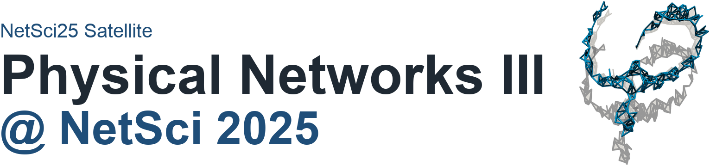
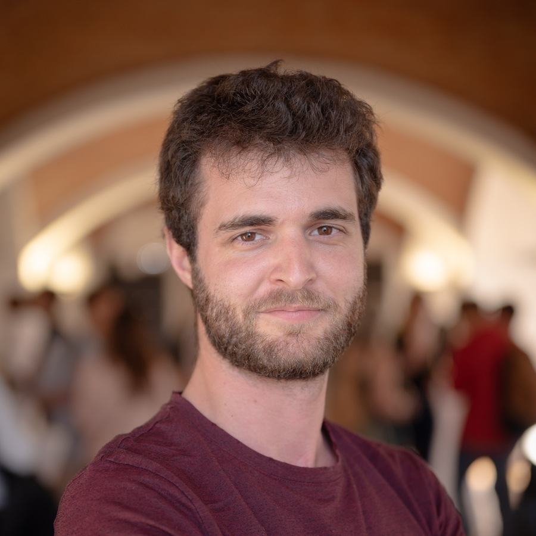
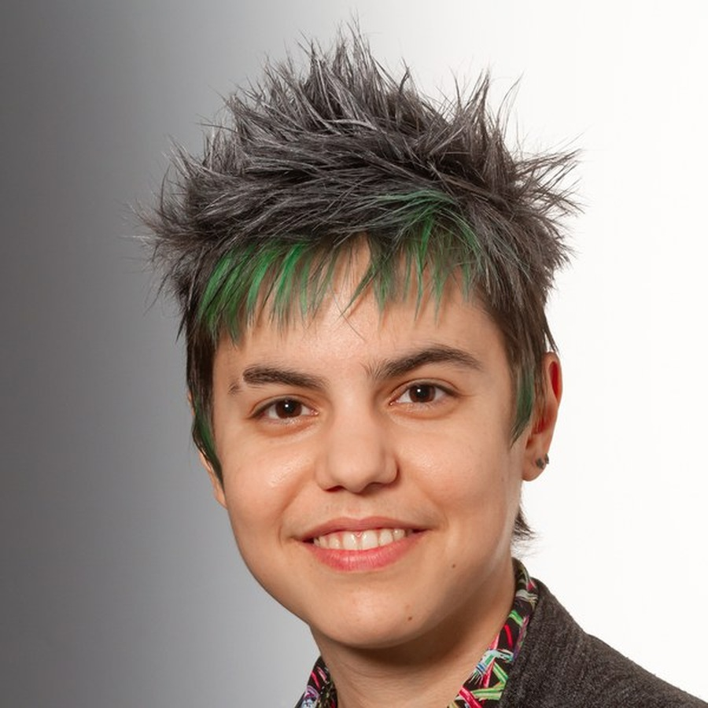
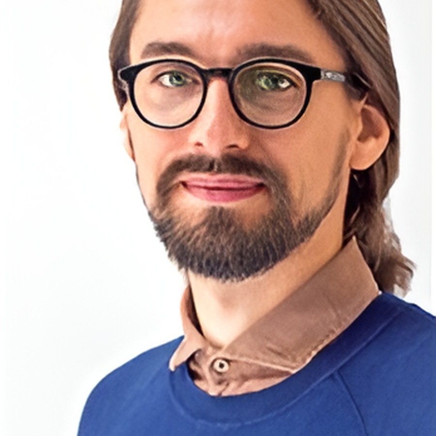

Date
June 2, 2026
Time
14:30 to 18:30
Venue
MECC Maastricht, Maastricht, the Netherlands
Room
FSE C1.005 at PHS1, Faculty of Science and Engineering, Maastricht University, Paul-Henri Spaaklaan 1, 6229 EN Maastricht, the Netherlands
Speakers
Marc Barthelemy
Institut de Physique Théorique (CEA) and Centre d’Analyse et de Mathématique Sociales
Gang Yan
MOE Key Laboratory of Advanced Micro-Structured Materials and School of Physical Science and Engineering, Tongji University

Maxime Lucas
Namur Institute for Complex Systems, Université de Namur

Iva Bačić
Institute of Climate and Energy Systems, Forschungszentrum Jülich

Ivan Kryven
Mathematical Institute, Utrecht University
Program
Abstract
This talk introduced surfacic networks, a class of spatial networks constrained to a two-dimensional manifold with elevation fluctuations. New tools include lazy paths that minimize uphill exertion, graph arduousness quantifying the impact of elevation on path choices, and excess effort capturing additional climb embedded in shortest paths. Toy models and empirical pedestrian networks show how topography alters shortest path geometry, betweenness centrality, and network efficiency.
Abstract
Arbuscular mycorrhizal fungi form symbiotic relationships with plant roots, and their network structure affects transport efficiency, exploration, and robustness. This work introduces a minimal spatial model of fungal network growth based on hyphal growth, branching, and fusion. Limited energy is allocated among local actions under geometric constraints, generating diverse morphologies and revealing principles relevant to decentralized, resource-limited biological and artificial systems.
Abstract
Percolation thresholds depend on the specific properties of a system. This work maps continuum percolation problems onto branching processes, providing rigorous lower bounds on the percolation threshold that tighten as additional statistical information is incorporated. The approach gives qualitative predictions for different continuum problems and analytic predictions for how thresholds vary with parameters such as particle size distribution, particle shape, or interaction potential.
Abstract
This talk proposed using random graphs to describe molecular composition in hydrocarbon pyrolysis. The carbon skeletons of molecules form a realization of a random graph, and the goal is to predict molecule-size distributions and the size of the largest molecule over ranges of composition and temperature. The talk argued that loops are crucial for emergent properties and introduced a model with disjoint loops as an analytically tractable description of sparse loop structure.
Abstract
Analysis of fruit fly synapse-resolution connectomes across developmental stages reveals a consistent scaling law of neuronal connection probability with spatial distance. This power-law behavior differs from the exponential distance rule observed in coarse-grained brain networks. The geometric scaling law aligns with maximum entropy principles in information communication and functional criticality, and provides a quantitative predictor of neuronal connectivity based on distance and in- and out-degrees.
Abstract
Physical networks, such as brain connectomes, composite metamaterials, mycelium, and 3D integrated circuits, are spatially embedded networks whose nodes and links have shape, occupy volume, and do not intersect. This work studies the onset and impact of physicality in models of linear physical networks with non-overlapping cylindrical links. The models exhibit transitions corresponding to the onset of physicality and to finite-volume or jammed states, with a meta-graph formalism used to predict these effects.
Abstract
This talk introduced ScaleRich materials, truss systems characterized by heterogeneous line lengths, thicknesses, and connectivity distributions. The construction selects nucleation points and orientations, adds line segments with thicknesses drawn from a power law, and repeats until the structure jams or completes. The resulting thickness, length, and degree distributions follow power laws, and the model exhibits a transition between jammed and finite-density states.
Abstract
Materials science offers opportunities and challenges for network modeling. The networks underlying physical connections between molecules, monomers, particles, crystals, domains, and related structures can determine material properties. The talk outlined criteria that network models for materials should satisfy, highlighted open challenges, and discussed possible modeling strategies with examples from polymer materials.
Abstract
This work explores the robustness of complex networks against physical damage in spatially embedded models and datasets where links are physical objects or physically transfer some quantity. Physical damage is simulated by tiling networks with boxes and damaging them sequentially. An intersection graph tracks links passing through tiles, allowing analysis of how layout and topology jointly affect percolation thresholds. The framework is compared against targeted physical damage and empirical networks.
Organizers
Márton Pósfai
Department of Network and Data Science, CEU
Ivan Bonamassa
Department of Network and Data Science, CEU
Jasper van der Kolk
Department of Network and Data Science, CEU
Jun Yamamoto
Department of Network and Data Science, CEU
Keywords
Network geometry Network and soft materials Statistical topology Rheology and jamming Critical phenomena Random packings Polymer physics
Call for contributions
The satellite welcomed contributions spanning mathematics, physics, material science, computer science, biophysics, and related areas. Applications were requested as one-page abstracts sent to physnet@ceu.edu by 17 February 2025.
Archival note
Original public page: https://sites.google.com/view/physnet25/
Detailed program page: https://sites.google.com/view/physnet25/physnet25/detailed-program
This is a curated static reconstruction intended for long-term preservation on GitHub Pages.